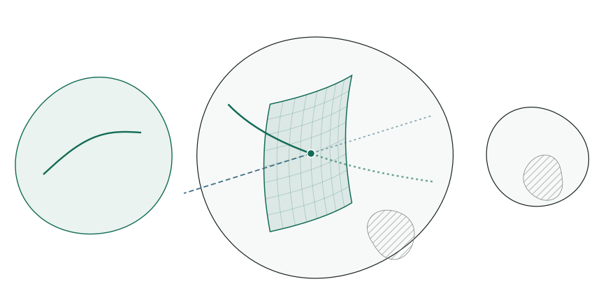
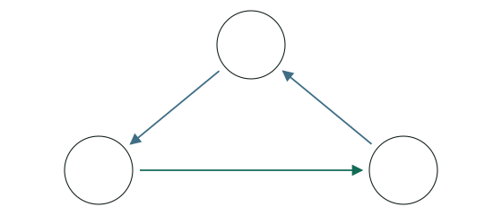
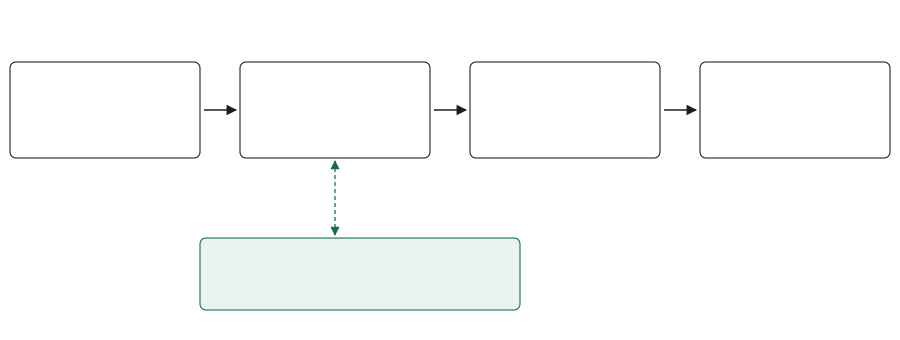
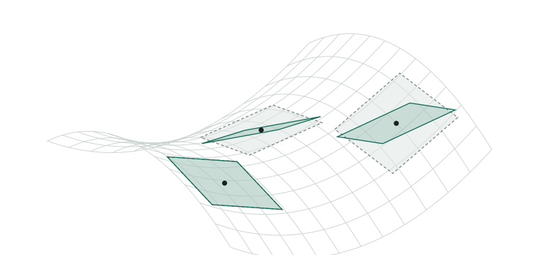
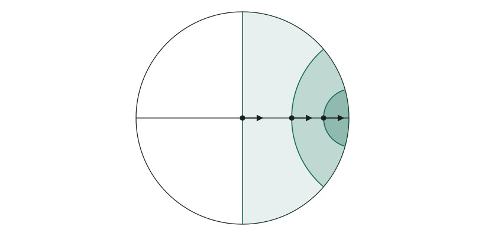
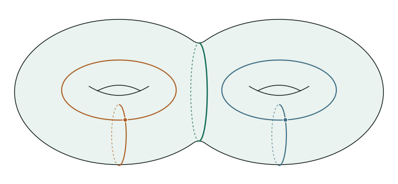

ExperimentalThis interactive version is a work in progress and does not replace the arXiv paper, which remains the reference. It is shared with colleagues and collaborators for feedback and is not intended for general circulation; please do not share the link.
Anosov deformations of Barbot representations
Colin Davalo and Samuel Bronstein
Through every reducible Fuchsian representation into \(\SL(3,\R)\) we construct a properly embedded disk of representations, all of them Anosov. These representations are holonomies of geometric structures on the unit tangent bundle of the surface, whose fibers are conics of flags.
1. Anosov slices in the character variety
Let \(S_g\) be a closed oriented surface of genus \(g\geq 2\) and \(\Gamma_g=\pi_1(S_g)\). We study representations \(\rho:\Gamma_g\to\SL(3,\R)\) up to conjugation, as points of the character variety \(\chi(\Gamma_g,\SL(3,\R))\), and ask which of them are Anosov: a uniform dynamical property, stronger than being discrete and faithful.
BackgroundWhat is an Anosov representation?
Fix a finite generating set of \(\Gamma_g\), with word length \(\lvert\gamma\rvert\), and an inner product on \(\R^3\). Write \(s_1(g)\geq s_2(g)\geq s_3(g)>0\) for the singular values of \(g\). A homomorphism \(\rho:\Gamma_g\to\SL(3,\R)\) is Borel-Anosov if there are constants \(A>0\) and \(B\geq0\) such that, for every \(\gamma\in\Gamma_g\),
This condition is independent of the chosen generators and inner product. It requires uniform growth of both singular-value gaps over the entire group, not just distinct eigenvalues for a single element. It is equivalent to the dynamical Anosov definition, and implies that a surface-group representation is discrete and faithful. [Lab06][BPS19]
A Fuchsian representation \(\rho_X:\Gamma_g\to\SL(2,\R)\) can be embedded in \(\SL(3,\R)\) in two ways. The irreducible embedding leads to the Hitchin component, a ball of dimension \(16g-16\) containing a copy of Teichmüller space. [Hit92] Every representation in it is Anosov [Lab06], and the Hitchin component is exactly the set of holonomies of convex projective structures on \(S_g\): \(\rho(\Gamma_g)\) divides a strictly convex domain of \(\R\mathrm P^2\). [Gol90][CG93] The reducible embedding gives
which is Anosov, but whose component also contains representations with compact image. We show that a whole disk through \(\rho_{\mathrm{red}}\) stays Anosov.
Fix a marked conformal structure \(X\) on \(S_g\) and a lift \(\rho_X:\Gamma_g\to\SL(2,\R)\) of its uniformizing holonomy. There is a properly embedded disk
containing \(\rho_{\mathrm{red}}\), all of whose representations are Borel-Anosov. In particular, every representation in the slice is discrete and faithful.

Figure 1. Where the slice lives (schematic, dimensions in parentheses). The three components are disjoint. In the component of \(\rho_{\mathrm{red}}\), the slice \(\mathcal S_X^{\R}\) meets the reducible Fuchsian locus and the deformations into \(\mathrm{GL}(2,\R)\) only at \(\rho_{\mathrm{red}}\), and avoids the representations with compact image.ExplanationThe two embeddings of \(\SL(2,\R)\) and Barbot's deformations
The irreducible embedding
\[\iota_{\mathrm{irr}}:\SL(2,\R)\to\SL(3,\R).\]
The three-dimensional irreducible representation is the action on homogeneous quadratic polynomials. The connected component containing \(\iota_{\mathrm{irr}}\circ\rho_0\) is the Hitchin component. Hitchin proved that it is a ball of dimension \(16g-16\) [Hit92]; Labourie proved that all its representations are Anosov [Lab06]. Goldman and Choi–Goldman identified it with the space of convex projective structures on \(S_g\): the holonomy preserves a strictly convex domain \(\Omega\subset\R\mathrm P^2\), and \(\Omega/\rho(\Gamma_g)\) is a closed surface homeomorphic to \(S_g\). Choi and Goldman proved that these holonomies form a closed subset, so that, being also open, they fill the whole component. [Gol90][CG93]
The action preserves a plane and fixes a complementary line. The representation \(\iota_{\mathrm{red}}\circ\rho_0\) is Anosov, but its connected component contains representations with compact image, hence representations that are not Anosov.
Barbot studied the reducible Fuchsian representations and their deformations inside \(\mathrm{GL}(2,\R)\subset\SL(3,\R)\), embedded by \(A\mapsto\operatorname{diag}(A,\det A^{-1})\), identifying when they stop being Anosov. These deformations form a locus of dimension \(8g-6\): \(6g-6\) for the \(\SL(2,\R)\)-part and \(2g\) for the determinant. [Bar01][Bar10] Our slice lies in the same component and meets those deformations only at the Fuchsian locus.
ExplanationWhy is this more than a local deformation statement?
Anosovness is an open property, so sufficiently small deformations of \(\rho_{\mathrm{red}}\) are already Anosov. The theorem gives a whole properly embedded slice, rather than only a small neighborhood of the starting point: its representations go arbitrarily far from the Fuchsian locus, and the geometry can be studied throughout a global family.
DetailsWhat happens when the conformal structure varies?
Are the slices \(\mathcal S_X^{\R}\) disjoint for distinct conformal structures? If they were, their union would have dimension \(10g-10\), compared with the dimension \(16g-16\) of the character variety. This disjointness is not known.
Limit curves
Anosov dynamics has a picture at infinity. An Anosov representation has a continuous equivariant limit map from the circle \(\partial\Gamma_g\) to the space of flags \((\text{point}\in\text{line})\) of \(\R\mathrm P^2\). For \(\rho_{\mathrm{red}}\), its points fill a projective line; for the other members of the slice, they draw a genuinely new curve.
Figure 2. The projective limit curve of a member of the slice, numerically sampled and drawn on \(S^2\) through both antipodal lifts. Green: front hemisphere; violet: back hemisphere. Drag to rotate.BackgroundLimit maps of Anosov representations
The Gromov boundary of a closed surface group is a circle, \(\partial\Gamma_g\simeq S^1\). An Anosov representation has a continuous equivariant map
For each boundary point \(\zeta\), \(\xi_\rho^1(\zeta)\) is a projective point and \(\xi_\rho^2(\zeta)\) a projective line containing it. At the attracting endpoint \(\gamma^+\) of a nontrivial element, \(\xi_\rho(\gamma^+)\) is the attracting flag of \(\rho(\gamma)\); in particular its point is the dominant eigenline. Distinct boundary points give transverse flags: \(\xi_\rho^1(\zeta)\notin\xi_\rho^2(\eta)\) for \(\zeta\neq\eta\). No smoothness of the point curve is assumed. [Lab06][GW12]
ExplanationThe limit flags of \(\rho_{\mathrm{red}}\)
Use coordinates \([X_1:X_2:X_3]\) in which \(\rho_X\) acts on \((X_1,X_3)\) and \(e_2\) is fixed. If \(\rho_X(\gamma)\) has eigenvalues \(\lambda>1>\lambda^{-1}\), then \(\rho_{\mathrm{red}}(\gamma)\) has eigenvalues \(\lambda>1>\lambda^{-1}\): its attracting line is the attracting eigenline of \(\rho_X(\gamma)\) inside the plane \(\{X_2=0\}\), and its attracting plane adds the fixed direction \(e_2\). Hence, with \(L_0=\mathbb P(\{X_2=0\})\) and \(p_0=[e_2]\),
\[\xi^1_{\mathrm{red}}(\partial\Gamma_g)=L_0,\qquad \xi^2_{\mathrm{red}}(\zeta)=\text{the line through }\xi^1_{\mathrm{red}}(\zeta)\text{ and }p_0.\]
The point curve is a whole projective line, and all limit lines form the pencil through \(p_0\). These flags determine the thickenings removed from the flag manifold in Section 3.
DetailsHow to read Figure 2
A point of \(\R\mathrm P^2\) is a line through the origin of \(\R^3\); it meets the unit sphere in two antipodal points. Each point of the limit curve is therefore drawn twice, and the picture is symmetric under \(x\mapsto-x\). Projectively, the reducible Fuchsian representation would give a great circle (the line \(L_0\)); the deformation bends it into a curve which, in the example shown, is no longer contained in a projective line. The curve is approximated by finitely many attracting eigenlines of group elements, so the picture is a sample of the limit set, not an exact drawing.
2. Construction: cyclic Higgs bundles and parallel planes
The slice is built with the non-Abelian Hodge correspondence. Fix a Riemann surface structure \(X\) on \(S_g\), with canonical bundle \(K\) and a square root \(K^{1/2}\). For each holomorphic section \(\alpha\in H^0(X,K^{3/2})\) we take the cyclic Higgs bundle
The entry \(\one\) is the identity, read as a map \(K^{1/2}\to K^{-1/2}\otimes K\). When \(\alpha=0\), only this arrow survives: this is the uniformizing Higgs bundle of \(X\) plus a trivial summand, that is, \(\rho_{\mathrm{red}}\). When \(\alpha\neq0\), the three summands are coupled cyclically.

Figure 3. The Higgs field maps each summand to the next one, tensored with \(K\).
BackgroundCanonical bundle, spin structure and the entries of \(\Phi\)
The canonical bundle \(K\) is the bundle of holomorphic one-forms. The choice of \(K^{1/2}\) is a spin structure, and \(K^{3/2}=K\otimes K^{1/2}\). The Higgs field is a holomorphic map \(\Phi:E\to E\otimes K\); its matrix is written in the displayed order of summands. The entry \(\one\) is the identity of \(K^{1/2}= K^{-1/2}\otimes K\), and each entry \(\alpha\) is a section of \(K^{3/2}\), seen as a map \(\mathcal O\to K^{1/2}\otimes K\) or \(K^{-1/2}\to\mathcal O\otimes K\). The real structure is encoded by the symmetric pairing
Solving Hitchin's equation gives a harmonic metric \(H\), a flat connection \(D\), and its holonomy \(\rho\). [Hit87][Cor88][Sim92] The real slice \(\mathcal S_X^{\R}\) is the set of these representations, parametrized by \(\alpha\).

Figure 4. The non-Abelian Hodge correspondence. The middle step is a harmonic bundle: a Higgs bundle together with a solution \(H\) of Hitchin's equation. Equivalently, \(H\) is a \(\rho\)-equivariant harmonic map \(h\) to the symmetric space; for our cyclic Higgs bundles it is a minimal immersion.BackgroundThe Dolbeault, de Rham and Betti descriptions
The non-Abelian Hodge correspondence relates polystable Higgs bundles (the Dolbeault description), reductive flat connections (the de Rham description), and representations up to conjugation (the Betti description). If \(\nabla_H\) is the Chern connection of \(H\), the equations are
Parallel transport for the flat connection \(D\) depends only on the homotopy class of a loop, which produces \(\rho\). In the reverse direction, a representation defines a flat vector bundle
and a harmonic metric recovers its Higgs-bundle description. The real structure selects holonomy in \(\SL(3,\R)\). The vector bundle \(E_\rho\to S_g\) should be distinguished from the circle fibration of a domain in the flag manifold in Section 3: they are different bundles associated with the same representation.
The parallel distribution of planes
The proof takes place in the symmetric space \(\mathbb X\) of volume-one inner products on \(\R^3\). The harmonic metric gives a \(\rho\)-equivariant minimal immersion \(h:\widetilde S_g\to\mathbb X\). Besides its tangent planes, we construct a second family of planes along \(h\): a parallel distribution \(V\), each plane tangent to a reducible hyperbolic plane \(\mathcal H_x\subset\mathbb X\).

Figure 5. Tangent planes (dashed) and parallel planes (green) along the minimal surface (schematic). They agree exactly at the zeros of \(\alpha\).
In the Fuchsian case all the planes \(\mathcal H_x\) are one fixed hyperbolic plane. After deformation they move along the surface, but parallelism and a maximum-principle estimate control how. This moving family supplies the conic fibers of Section 3 and the multicones of Section 4.
ExplanationThe differential of \(h\) and the map \(V\)
A harmonic metric chooses an inner product in each flat fiber; trivializing the flat bundle on the universal cover turns it into the map \(h\). The flat connection decomposes into a metric-preserving part and a self-adjoint part,
\[D=\nabla_H+\Psi,\qquad \Psi=\Phi+\Phi^{*H}.\]
Under the standard identification of tangent vectors to \(\mathbb X\) with self-adjoint trace-free endomorphisms, \(\Psi\) records the differential of \(h\). For a real tangent vector \(v\),
The two terms are adjoints of one another; with the real structure determined by \(B\) and \(H\), their sum represents a real tangent vector to the symmetric space. Now keep only the Fuchsian part of the Higgs field, that is, its value at \(\alpha=0\):
This defines a bundle map \(V:T\widetilde S_g\to h^*T\mathbb X\), using the same harmonic metric. Thus \(\mathrm dh\) uses \(\Phi+\Phi^{*H}\), while \(V\) keeps only \(\Phi_0+\Phi_0^{*H}\). For \(\alpha=0\) the two maps agree.
ExplanationParallelism and the hyperbolic planes \(\mathcal H_x\)
Parallel means that transporting a tangent vector on the surface and then applying \(V\) agrees with transporting its image in the symmetric space. If \(g_V\) is the metric determined by the construction, then
The maximum principle gives \(\lVert \alpha\rVert_H<\lVert\one\rVert_H\), which keeps the auxiliary planes sufficiently close to the tangent planes of the minimal immersion. Together with parallelism, this controls how the hyperbolic planes, conics and multicones vary along a geodesic, and gives the strict nesting of Section 4.
ExplanationWhy this has no analogue in \(\mathbb H^3\)
Along an immersed surface in \(\mathbb H^3\), a parallel distribution of planes is necessarily trivial: it is the distribution of tangent planes of a totally geodesic surface. Indeed, a parallel plane field \(V\subset h^*T\mathbb H^3\) is invariant under the curvature \(R(\mathrm dh\,u,\mathrm dh\,v)\), and in constant curvature this endomorphism is an infinitesimal rotation of the tangent plane \(\mathrm dh(T_x\widetilde S)\). The only plane it preserves is that tangent plane, so \(V=\mathrm dh(T\widetilde S)\), and a surface whose tangent planes are parallel is totally geodesic. In the higher-rank space \(\mathbb X\) the curvature has more room, and \(V\) can differ from the tangent planes away from the zeros of \(\alpha\).
DetailsThe metric \(g_V\) and the tangent planes
For our cyclic Higgs field the harmonic metric is diagonal, \(H=\operatorname{diag}(h_1,1,h_1^{-1})\). The metric \(g_V\) is the metric \(h_1^{-2}\) on \(K^{-1}\), viewed as a tangent metric on the surface. The maximum principle also implies that \(g_V\) is negatively curved. It is not in general the metric induced by \(h\). Likewise, \(V(T_x\widetilde S_g)\) is not in general the tangent plane \(\mathrm dh(T_x\widetilde S_g)\); the two coincide exactly at zeros of \(\alpha\).
3. Flag structures on the unit tangent bundle
A full flag of \(\R^3\) is a projective point together with a projective line through it. A nondegenerate conic \(C\subset\R\mathrm P^2\), with its tangent lines, gives a circle of flags:
The representations in \(\mathcal S_X^{\R}\) are holonomies of \(\mathcal F_{1,2}\)-structures on \(T^1S_g\), whose fibers are conics in \(\mathcal F_{1,2}\).
BackgroundWhat is a structure modeled on the flag space?
Locally, the manifold has coordinate charts taking values in \(\mathcal F_{1,2}\), with changes of coordinates given by elements of \(\SL(3,\R)\). The holonomy records these coordinate changes along loops. In the structure of the theorem, each circle fiber is mapped locally to a conic of flags. Admitting such a structure is an open property, so it does not characterize this particular Higgs-bundle slice.
The Fuchsian model: conics parametrized by a hyperbolic plane
For \(\rho_{\mathrm{red}}\), remove from \(\mathcal F_{1,2}\) every flag sharing its point or its line with a limit flag. What remains is a domain \(\Omega\) on which \(\Gamma_g\) acts properly discontinuously and cocompactly. [GW12][KLP18] In the affine chart where the invariant line \(L_0\) is at infinity and the fixed point \(p_0\) is the origin, \(\Omega\) consists of the flags \((p,\ell)\) whose line misses \(p_0\), and it fibers over a hyperbolic plane \(\mathcal H\): the fiber over \(x\in\mathcal H\) is the conic of flags of a centered ellipse \(C_x\) of area one. Move the point to see the fiber.
\(x\in\mathcal H\simeq\mathbb H^2\)
\((p,T_pC_x)\in\widehat C_x\)
\(p\)\(T_pC_x\)
ExplanationThickenings, the domain \(\Omega_\rho\) and the quotient
Let \(\xi_\rho:\partial\Gamma_g\to\mathcal F_{1,2}\) be the Anosov limit map. The thickening \(K_f\) of a flag \(f=(p,\ell)\) consists of the flags sharing either its point or its line:
For \(\rho_{\mathrm{red}}\), a flag \((p,\ell)\) is removed exactly when \(p\in L_0\) or \(p_0\in\ell\). The conic fibers form an equivariant fibration \(\pi:\Omega_\rho\to\mathcal H\),
\[\pi(\rho(\gamma)f)=\gamma\cdot\pi(f).\]
Passing to the quotient gives a circle bundle \(\Omega_\rho/\rho(\Gamma_g)\to S_g\), with local flag coordinates inherited from the open domain; the representation is the holonomy governing these coordinate changes. [Bar10]
ExplanationWhy each flag lies on exactly one ellipse
In the drawing coordinates, the ellipses are \(y^{T}Qy=1/\pi\) with \(Q\) symmetric positive of determinant one. A flag \((p,\ell)\) with \(\ell\) of normal \(n\) lies on such an ellipse iff \(p^TQp=1/\pi\) and \(\ell\) is tangent at \(p\), that is, \(Qp\) is proportional to \(n\). These conditions force
\[Qp=\frac{n}{\pi\,(p\cdot n)},\]
which requires \(p\cdot n\neq0\): the line must not pass through the origin \(p_0\). The symmetric matrices with a prescribed value on \(p\) form an affine line \(Q_0+k\,p^\perp(p^\perp)^T\), on which the determinant is affine in \(k\); exactly one of them has determinant one, and it is positive since \(p^TQp>0\).
ExplanationWhere the conics come from: projections and Busemann functions
Begin with a familiar example. A totally geodesic plane \(\mathbb H^2\subset\mathbb H^3\) has a nearest-point projection \(\pi_0:\mathbb H^3\to\mathbb H^2\). The fiber over \(q\) is the complete geodesic through \(q\) perpendicular to the plane; its two ideal endpoints also determine \(q\), since each associated Busemann function has its minimum on the plane at \(q\).
In the symmetric space \(\mathbb X\), fix a reducible hyperbolic plane \(\mathcal H\). A flag determines a Busemann function on \(\mathbb X\). Restricting it to \(\mathcal H\) gives either a unique minimum in \(\mathcal H\), or a distinguished ideal endpoint. This defines a projection
The flags whose minimum is at \(q\in\mathcal H\) form a conic of flags. In \(\mathbb H^3\) the boundary fibers have two points; in the flag manifold, the interior fibers are circles. The analogy explains the projection mechanism, not the shape of the fibers.
DetailsCoordinates for the hyperbolic point and its conic
Identify the disk coordinate \(z=u+iv\), \(\lvert z\rvert<1\), with the positive symmetric matrix of determinant one
In homogeneous coordinates \([X_1:X_2:X_3]\), the conic is \(\begin{pmatrix}X_1&X_3\end{pmatrix}Q_z\begin{pmatrix}X_1\\X_3\end{pmatrix}=X_2^2\). At the center, \(Q_0=I\). In the affine chart \(X_2=1\), its points are \(w(\theta)=Q_z^{-1/2}(\cos\theta,\sin\theta)^T\), and the tangent at \(w\) has equation \(w^TQ_z\,y=1\). For the drawing, use the fixed affine coordinates \(y=(X_1,X_3)^T/(\sqrt{\pi}X_2)\): the ellipse is \(y^TQ_zy=1/\pi\), of area one, at a fixed scale, so a large ellipse can extend beyond the frame. With \(r=\lvert z\rvert\), the semiaxes are
so \(\pi a(r)b(r)=1\), while \(2a(r)\to\infty\) as \(r\to1\).
DetailsGeometric holonomy and the developing map
A flag structure is described by a local diffeomorphism from the universal cover of its three-manifold to \(\mathcal F_{1,2}\), equivariant under its holonomy. The conic fibration is compatible with projection to the surface; the holonomy factors through the surface group and is induced by \(\rho\). Thus the same representation appears as the holonomy of the flat vector bundle and as the transformation rule for the flag geometry.
For the deformed representations, the parallel planes of Section 2 replace the fixed plane \(\mathcal H\) by the moving planes \(\mathcal H_x\), and hence move the conic fibers. Comparing them along geodesics is the content of the last section.
4. Multicones and the Anosov criterion
A unit tangent vector \(v\) at \(x\) selects a half-plane of \(\mathcal H_x\); its preimage under the projection \(\pi\) is the multicone \(U_v\subset\mathcal F_{1,2}\). Along the geodesic flow \(\varphi_s\) of \(g_V\), these sets are strictly nested:
We measure how deeply one multicone sits inside another by a nesting function \(\operatorname{Nest}\). It is superadditive, so along the flow it grows at least linearly; this linear growth is the Anosov property. This proves Theorem 1.1, without assuming in advance that \(\rho\) is Anosov.

Figure 6. The Fuchsian case, exact: all the planes \(\mathcal H_x\) are one plane \(\mathcal H\). The multicones \(U_{\varphi_s(v)}\) project to the nested half-planes bounded by the geodesics orthogonal to the axis at distance \(s=0,1,2\). After deformation, the planes \(\mathcal H_x\) move, and nesting must be proved.ExplanationMulticones and the nesting function
For a flag \(f=(f^1,f^2)\), recall the thickening \(K_f=\{g:\ g^1=f^1\text{ or }g^2=f^2\}\). An open set \(U\subset\mathcal F_{1,2}\) is a multicone if there are flags \(f_\pm\) with
Such a pair of flags is transverse. In a basis \((e_1,e_2,e_3)\) adapted to it, with \(f_+=(\langle e_1\rangle,\langle e_1,e_2\rangle)\) and \(f_-=(\langle e_3\rangle,\langle e_3,e_2\rangle)\), let
As \(\lambda\to\infty\), \(g_\lambda\) contracts \(\mathcal F_{1,2}\setminus K_{f_-}\) towards \(K_{f_+}\). If \(\overline{U_2}\subset U_1\), the nesting \(\operatorname{Nest}(U_1,U_2)\) is the minimum, over the pairs \(f_\pm\) with \(K_{f_+}\subset\overline{U_2}\) and \(K_{f_-}\cap U_1=\emptyset\), of the largest \(\lambda\) such that \(U_2\subset g_\lambda U_1\). It has three properties:
superadditivity: if \(\overline{U_3}\subset U_2\) and \(\overline{U_2}\subset U_1\), then \[\operatorname{Nest}(U_1,U_3)\geq\operatorname{Nest}(U_1,U_2)+\operatorname{Nest}(U_2,U_3);\]
shrinking: if \(U_1\supset U_2\supset\cdots\) and \(\operatorname{Nest}(U_1,U_n)\to\infty\), then \(\bigcap_nU_n=K_f\) for a single flag \(f\).
ExplanationFrom strict nesting to Anosovness
Multicone criterion. Fix a Riemannian metric on \(S_g\). If one can associate to each \(v\in T^1\widetilde S_g\), continuously and \(\rho\)-equivariantly, a multicone \(U_v\) with \(\overline{U_{\varphi_s(v)}}\subset U_v\) for all \(s>0\), then \(\rho\) is Borel-Anosov. Moreover, if \(\varphi_s(v)\) converges to \(\zeta\in\partial\Gamma_g\), then
The argument: by continuity, equivariance and compactness of \(T^1S_g\), the quantity \(\delta=\inf_v\operatorname{Nest}(U_v,U_{\varphi_1(v)})\) is positive. Superadditivity then gives
If \(v\) lies on the axis of \(\gamma\), equivariance gives \(U_{\varphi_{\ell}(v)}=\rho(\gamma)U_v\), where \(\ell\) is the length of the closed geodesic of \(\gamma\). Comparing \(\rho(\gamma)\) with \(g_\lambda\) yields a gap between the eigenvalues of \(\rho(\gamma)\) of size at least \(\delta\ell-\delta\): a bound that grows linearly with the length, uniformly over the group. [BPS19][BD25]
DetailsWhy the multicones \(U_v\) are nested
The multicone \(U_v\) is bounded by the preimage of the geodesic of \(\mathcal H_x\) orthogonal to \(V(v)\) and by two thickenings. Because \(V\) is parallel, the first-order variation of \(\partial U_v\) under the geodesic flow is given by the infinitesimal transvection of \(\mathbb X\) in the direction \(\mathrm dh(v)\). The bound \(\lVert\alpha\rVert_H<\lVert\one\rVert_H\) from the maximum principle makes this vector field point strictly into \(U_v\) along its boundary, with a uniform margin. Integrating along the flow gives the strict inclusion.
\(U_v\)\(U_{\varphi_s(v)}\)
Very schematic: the actual multicones are open subsets of the three-dimensional flag manifold \(\mathcal F_{1,2}\); the disks only indicate the direction of the inclusions as the flow parameter grows.
The genus-two boundary of a multicone
Let \(\gamma\subset\mathcal H\) be the geodesic bounding the half-plane, with endpoints \(\gamma^\pm\). The boundary of the multicone is a cylinder of regular conic fibers, closed up by the two thickenings \(K_{\gamma^\pm}\), each a wedge of two circles:
The result is a closed orientable surface of genus two.

Figure 7. The boundary \(\partial U_v\), topologically. Each thickening \(K_{\gamma^\pm}\) is a wedge of two circles meeting at the endpoint flag \(\xi(\gamma^\pm)\); it is a spine of one punctured-torus half. The regular fiber \(\pi^{-1}(x_0)\) over a point of \(\gamma\) is the circle separating the two halves; the other regular fibers sweep out the rest of the surface.ExplanationThe endpoint thickenings
Each endpoint fiber \(K_{\gamma^\pm}\) consists of the flags sharing the point of the endpoint flag (a circle) and the flags sharing its line (another circle); the two circles meet at the endpoint flag. As the regular fibers \(\pi^{-1}(x)\) run along \(\gamma\) towards \(\gamma^\pm\), they degenerate onto this wedge. Topologically, each wedge has a punctured-torus neighborhood; joining the two boundary circles by a cylinder gives Euler characteristic \(-2\), hence genus two.
DetailsExact coordinates of the regular fibers
For a standard geodesic, the open cylinder has the following parametrization in the flag manifold, with \(\lambda>0\) and \(\theta\in\R/2\pi\Z\):
Fixing \(\lambda\) gives one conic of flags; varying \(\lambda\) runs along the geodesic. Compactifying \(\lambda\to0\) and \(\lambda\to\infty\) gives the two wedges. The two factors pair to zero, so each pair is indeed a flag.
DetailsRegularity: are the wedges singularities of the surface?
The endpoint fibers are graphs, but the total boundary is a \(C^1\) surface. The two endpoint flags are the only points where it is not \(C^2\). Figure 7 shows only the topology.
The four parts fit together: cyclic Higgs bundles give a slice of representations; their harmonic geometry supplies parallel planes and conic fibrations; the nested multicones prove the dynamical property announced in the first theorem.
Jairo Bochi, Rafael Potrie, Andrés Sambarino. Anosov representations and dominated splittings. Journal of the European Mathematical Society 21(11), 3343–3414 (2019).
Suhyoung Choi, William M. Goldman. Convex real projective structures on closed surfaces are closed. Proceedings of the American Mathematical Society 118(2), 657–661 (1993).
Michael Kapovich, Bernhard Leeb, Joan Porti. Dynamics on flag manifolds: domains of proper discontinuity and cocompactness. Geometry & Topology 22(1), 157–234 (2018).